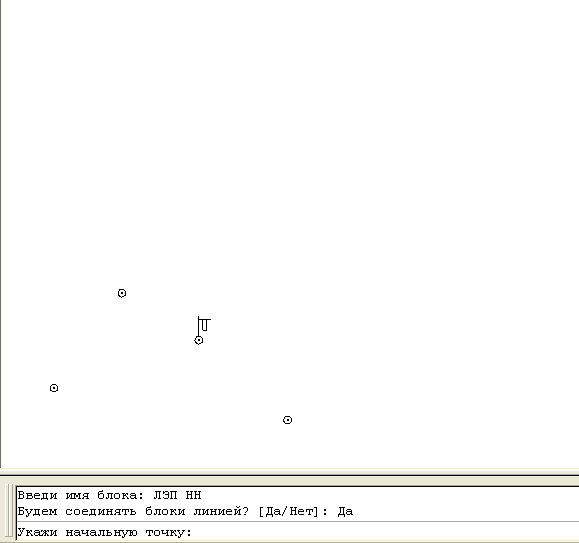

Команда: draw_provod_and_insert_blocks_arrows
Команда: draw_provod_and_insert_blocks_arrowsАвтоматизация отрисовки проводов.
Программа предназначена для отрисовки линий воздушных коммуникаций, поддерживаются следующие блоки (условные знаки): Связь, ЛЭП ВН, ЛЭП НН. По выбору предлагается отрисовка линии соединяющей указываемые точки, что соответствует условному знаку комуникаций на незастроеной территории) линии наносятся типом линии одноименным блоку(для последующего облегчения построения профиля).
Пример макроса(содержимое кнопки):
^C^Cdraw_provod_and_insert_blocks_arrows;Связь;Да
символ ";" соответствует нажатию клавиши Enter
Команда: draw_provod_and_insert_blocks_arrows
 Введи имя блока:
Введи имя блока:
Связь
Будем соединять блоки линией? [Да/Нет]:
Да
Укажи начальную точку:
 указывает точку, точнее начальный столб
указывает точку, точнее начальный столб
Укажи следующую точку:
указывает точку, точнее следующий столб. (этот запрос повторяется циклически, пустой ввод выход из программы)
Пример работы программы
